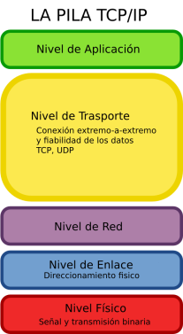

5.4. Protocolo de Control de la Transmisión (TCP)

Pila TCP IP
Imagen de wikimedia.org (Autor: Telematicauc3m). Recuperado de https://es.m.wikipedia.org/wiki/Archivo:Pila_tcp_ip.png
{kind=link}
Licencia Creative Commons Genérica de Atribución/Compartir-Igual 3.0
CAPA DE TRANSPORTE
De forma general, la capa de transporte ofrece la fiabilidad necesaria para el intercambio de datos entre un origen y un destino. Es la capa superior a la de transporte la que determina el grado de fiabilidad que se necesita, liberando a la capa superior de aspectos como el camino que deben recorrer los datos para alcanzar el otro extremo o si hay que hacer una recuperación porque se ha producido una caída de la conexión.
En la arquitectura TCP/IP hay dos protocolos de transporte:
- Protocolo UDP (Protocolo de Datagrama de Usuario)
- Protocolo TCP (Protocolo de Control de Transmisión)
PROTOCOLO UDP
Mediante este protocolo es posible el intercambio de datos entre un origen y un destino sin que se haya establecido una conexión previamente. Es decir, cuando se usa este protocolo es porque no es necesario que exista un control de flujo en la comunicación o no es necesario que se confirme que se han recibido unos datos, por tanto, es un intercambio de datos no fiable.
Este tipo de protocolos se utiliza cuando son pocos los datos a enviar frente la información de control necesaria que se requiere para una transmisión fiable. Otro caso en el que se puede encontrar es para el envío de audio y vídeo a través de la red, donde existen estrictos requisitos de retardo y no es posible hacer retransmisiones.
PROTOCOLO TCP
Este protocolo posibilidad el intercambio de datos entre un origen y un destino de forma fiable, esto quiere decir que los datos se entregarán a la capa superior sin errores y en el mismo orden en el que se recibieron. Además, hay que tener en cuenta que la red se puede comportar de diferente manera según la carga que tenga, por tanto, el protocolo debe tener distintos mecanismos que se adapten a distintas situaciones.
En un ordenador, hay aplicaciones por encima de la capa de transporte que hacen uso de ella para poder enviar datos a un equipo remoto. Las aplicaciones acceder a los servicios de TCP mediante los puertos. Por tanto, un ordenador se mantiene constantemente a la espera de recibir datos de aplicaciones remotas por un puerto o recibirlos de aplicaciones del propio ordenador. Son muchas las aplicaciones a las que da soporte TCP como los navegadores o el intercambio de ficheros mediante ftp y protocolos de aplicación HTTP, SMTP, SSH y FTP.
Para especificar el puerto TCP se tienen 16 bits por lo que hay un total de 65536 puertos posibles. De todos ellos, los puertos menores de 1024 son puertos muy conocidos como es el caso del puerto 21 para ftp o el puerto 80 de “http”.
Importante
Dos ordenadores que siguen una arquitectura TCP/IP para comunicarse, pueden utilizar TCP como protocolo de transporte.
La capa de transporte ofrece la fiabilidad necesaria para el intercambio de datos entre un origen y un destino.
Los protocolos de la capa de transporte son:
- Protocolo UDP (Protocolo de Datagrama de Usuario) para el intercambio de datos no fiable entre un origen y un destino.
- Protocolo TCP (Protocolo de Control de Transmisión) para el intercambio de datos fiable entre un origen y un destino.
Para poder acceder a las aplicaciones que usan los servicios de la capa de transporte se tienen los puertos. Los que son menores de 1024 son puertos muy conocidos como es el caso del puerto 21 para ftp o el puerto 80 de “http”.